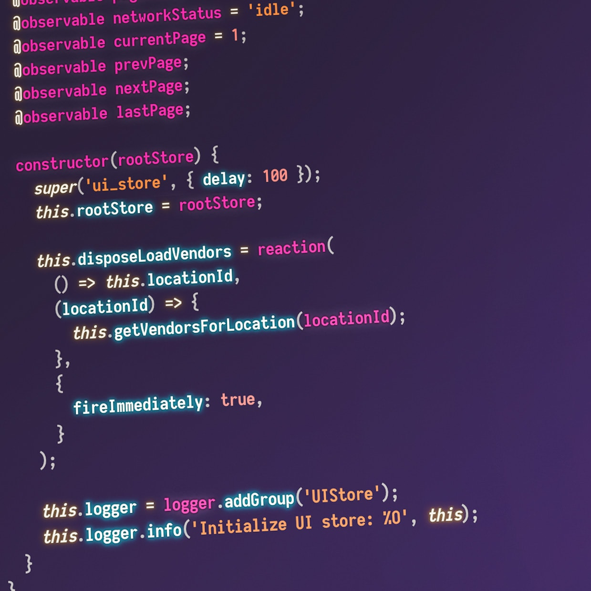

JavaScriptეს არის ობიექტზე ორიენტირებული დაპროგრამების საშუალება.
რომელიც გამოიყენება ვებ გვერდების აწყობის პროცესში, ვებ რესურსები 99.9%-ში
გამოყენებულია JavaScript-ის კოდი. JavaScript გამოიყენება ვებ გვერდის
გაცოცხლებისათვის, მისი საშუალებით ვებ გვერდი გაცილებით დახვეწილი და ლამაზია.
JavaScriptS-ის კოდი პირდაპირ იდგმება HTML კოდში, რაც JavaScript-ის ერთ-ერთი
მნიშვნელოვანი უპირატესობაა და რის გამოც ამ ენას იყენებენ ვებ გვერდების
შენების პროცესებში.

აქვე მინდა ავღნიშნოთ, რომ JavaScript დაპროგრამების ტექნოლოგია
აბსოლიტურად განსხვავდება Java დაპროგრამების ტექნოლოგიისგან. ხშირად
ამ ორი დაპროგრამების საშუალებას ურევენ ერთმანეთში. Java
შეიძლება ითქვას, რომ შედარებით მაღალი დონის დაპროგრამების
საშუალებაა, თუმც JavaScript-ის განვითარებამ მიაღწია იმ დონეს, რომ
თამამად შეიძლება ვუწოდოთ მას Javas უმცროსი ძმა.
Copyright © 2013 site created by: Luka Sheklashvili